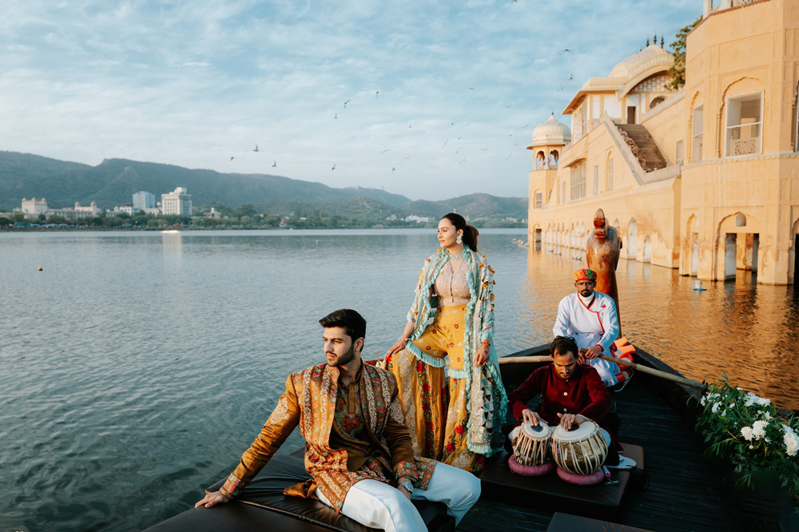
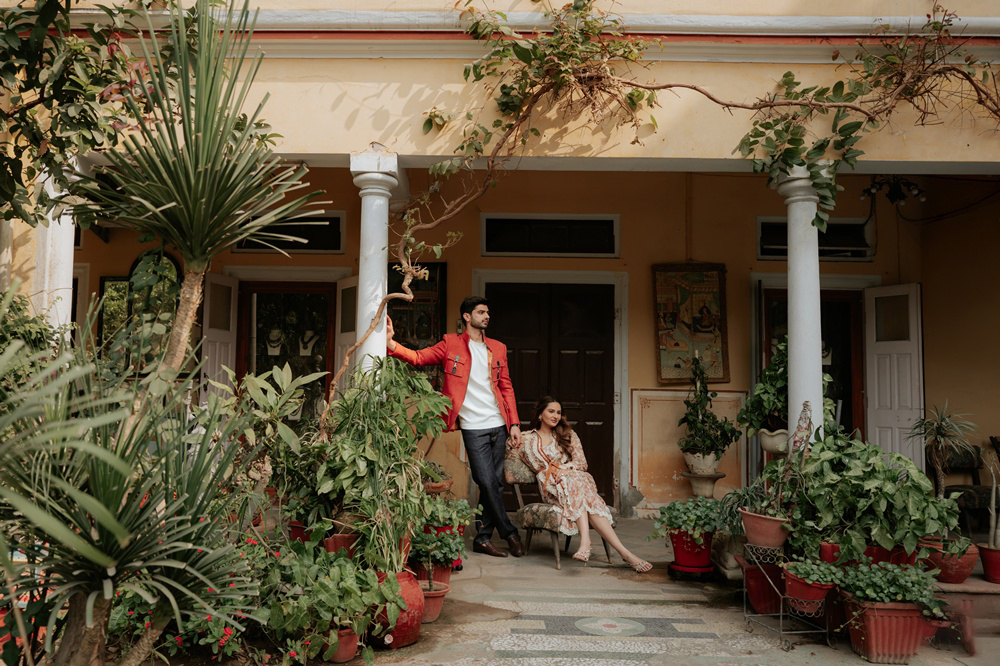
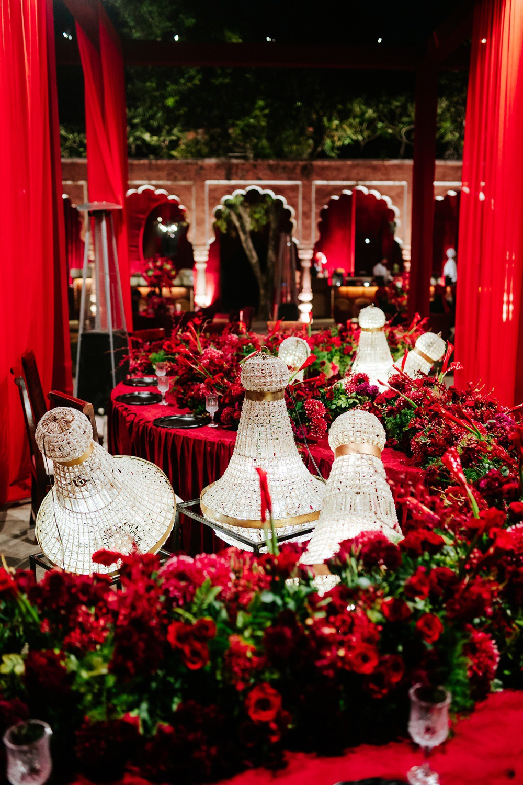
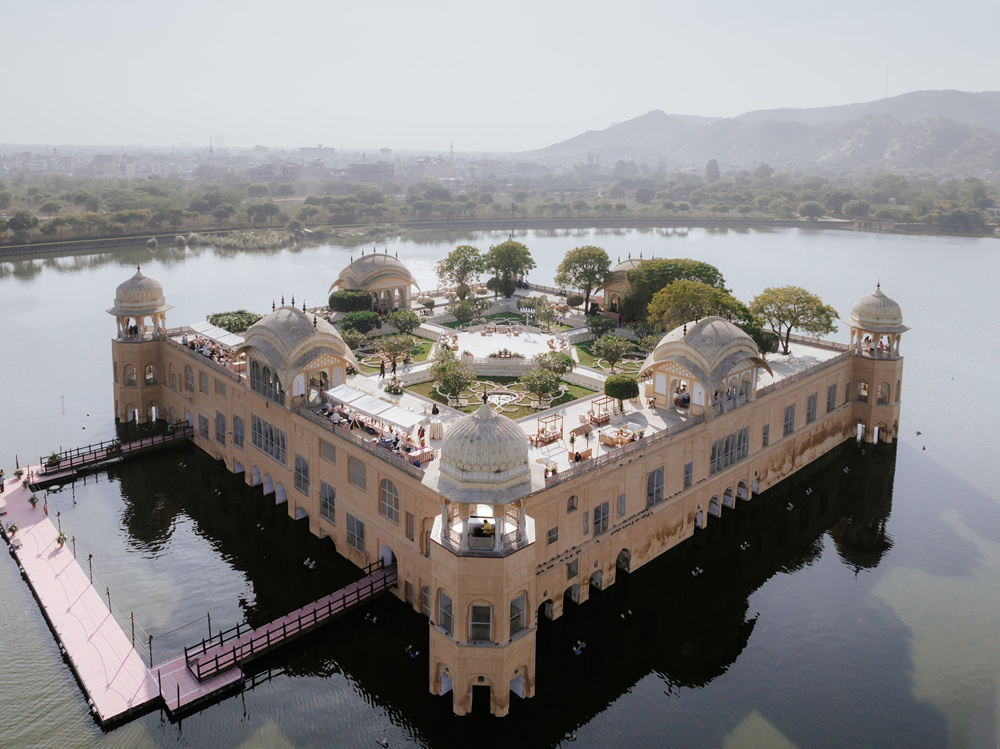

01 / THE CELEBRATIONWhere it all
Where it all
comes alive.
The people you love, together in a moment you will carry long after the day ends.
THE EVER AFTER PORTFOLIO
Intimate gestures. Grand settings. And all the moments in between that make a celebration feel entirely your own.

EVER AFTER WEDDINGS / SELECTED IMAGESA wedding lives in the moments you share and the way a place makes you feel. Here is a closer look at the people, spaces, and details in the Ever After world.

The people you love, together in a moment you will carry long after the day ends.

Colour, light, texture, and scale working together to set the tone.

That shift from ceremony to celebration, when everyone can simply be there.

